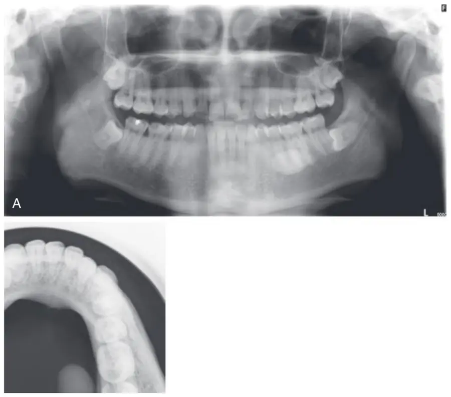
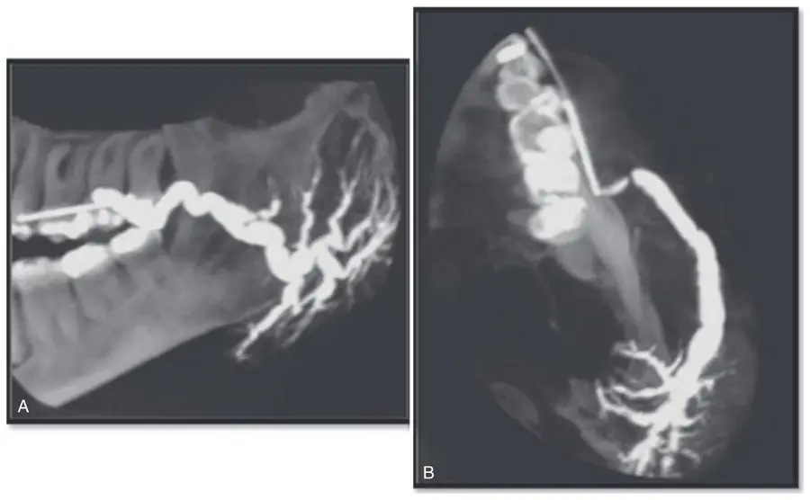

نسخه استخراجشده؛ ترجمه یا تأیید علمی انجام نشده است. وضعیت: captured
یک شکایت، تشخیص را تقریباً میسازد: «بیماران با انسداد مزمن معمولاً با سابقهی تورم متناوب و حساس یکطرفه در ناحیهی غدهی بزاقی درگیر مراجعه میکنند، بهویژه هنگام وعدههای غذایی.»

و سازوکارش یک چرخه است: انسداد به تجمع بزاق پروگزیمال به محل انسداد — یعنی نزدیکتر به پارانشیم غده — میانجامد و آن قطعه از مجرا گشاد میشود. «این گشادشدگی هنگام وعدهی غذا که مقدار زیادی بزاق بهسرعت تولید میشود به بیشینه میرسد. اندکی پس از غذا، بزاق بهآرامی راهش را دور نقطهی انسداد و به حفرهی دهان مییابد.»
و پیامد درازمدت این چرخه: «تصور میشود این فرایند تکرارشوندهی انسداد و انباشت بزاق به گشادشدگی دائمی مجاری بزاقی — سیالکتازی — میانجامد.» و «راکد ماندن بزاق در این بخشهای متسع میتواند غده را به ورود مکرر رتروگرید میکروارگانیسمهای باکتریایی دهان مستعد کند».
و دو عدد که جایگاه این بیماری را مشخص میکنند: «تخمین زده میشود تقریباً ۱٪ جمعیت سنگ بزاقی دارند، ولی اوج شیوع در دههی چهارم تا ششم زندگی است.» و سنگهای بزاقی «نهتنها شایعترین علت التهاب مزمناند، بلکه شایعترین وضعیتی هستند که غدد بزاقی بزرگسالان را درگیر میکند».
و مهمترین عدد این درس: «تقریباً ۸۳٪ سنگهای بزاقی در مجاری غدد سابمندیبولار تشکیل میشوند.»
و چهار دلیلش را با هم به یاد بسپار: مسیر پرپیچوخم رو به بالای مجرا که به دهانهای نسبتاً باریک ختم میشود، ماهیت چسبناک بزاق سابمندیبولار، pH بالای آن، و محتوای معدنی بالای آن.
و خودِ سنگ چگونه شروع میشود؟ «هرچند پیدایش سنگهای بزاقی خوب فهمیده نشده، میتوانند بهعنوان هستهای از کریستالهای معدنی کلسیم و فسفر، مادهی آلی، یا مادهی سلولی نکروتیک آغاز شوند که مواد آلی و معدنی بزاق روی آن رسوب میکنند.»
و علت دوم انسداد — تنگی: «تنگیها دومین علت شایع التهاب مزمناند، و هرچند علتشان هنوز ناشناخته است، تصور میشود باریک شدن مجرا نتیجهی فیبروزی باشد که ثانویه به سنگ بزاقی، عفونتهای مکرر، یا تروماهای جزئی رخ میدهد.»
و کل خانوادهی علل انسداد: اولیه — سنگ بزاقی، تنگی مجرا، و پلاگ موکوسی، ثانویه — تروما به ساختارهای مجرایی، یا ضایعات فضاگیری که به مجرا فشار میآورند. و «دوسوم همهی موارد التهاب مزمن غدد بزاقی از انسداد مزمن غده میآید».
نخستین گام، تصویربرداری تخت است — و یک قاعدهی صریح دارد: «تصاویر تخت باید نخست در نظر گرفته شوند وقتی بیمار با علائم انسداد غدهی بزاقی مراجعه میکند، که میتواند شامل تورم و درد درست پیش از وعدهی غذا یا هنگام آن باشد.»

و مزیتهایش: در دسترس، ارزان، و با دوز نسبتاً پایین. و «افزون بر آن، تصاویر تخت به دندانپزشک اجازه میدهند ساختارهای استخوانی مجاور غدد بزاقی را ارزیابی کند».
و حالا مهمترین مهارت مکانیابی این درس — روی پانورامیک:
و برای مجرای سابمندیبولار، یک کلیشه از پانورامیک بهتر است: «تصاویر اکلوزال مقطعی مندیبل اغلب در شناسایی و مکانیابی سنگهای مجرای سابمندیبولار مؤثرترند.»
و ظاهر سنگ: «موجودیتهایی خوشمرز، مختلط رادیولوسنت و رادیواوپک، یا کاملاً رادیواوپک در مجاورت غدهی درگیر» — و اغلب با الگوی لایهلایهی متحدالمرکز.
و بزرگترین محدودیت تصویربرداری تخت، یک عدد است: «متأسفانه تا ۴۰٪ سنگهای بزاقی ممکن است به اندازهی کافی کلسیفیه نباشند که روی تصاویر تخت دیده شوند.» و به تفکیک: «تخمین زده میشود تقریباً ۴۰٪ همهی سنگهای پاروتید و ۲۰٪ همهی سنگهای سابمندیبولار» غیرکلسیفیهاند.
پس تصویر تخت منفی، سنگ را رد نمیکند. و اینجاست که سیالوگرافی وارد میشود: «سیالوگرافی روش انتخابی برای التهاب مزمن است، بهدلیل تواناییاش در نمایش سنگها — حتی سنگهای کوچک غیرکلسیفیه — تنگیها، و تغییرات ظریف ساختارهای مجرایی ظریف غده.»
و مشهورترین نشانهی سیالوگرافیک این یونیت: «یکی از ظاهرهای معمول التهاب مزمن، ظاهر «سوسیسمانند» مجرای بزاقی است که نمایندهی نواحی متناوب تنگی و سیالکتازی است.»
و ظاهر دوم: «تجمعات کروی مادهی حاجب که نمایندهی تشکیل آبسهاند.» و یک تفکیک مهم: «اینها با تجمعات کروی که در سیالادنیت خودایمن دیده میشوند تفاوت دارند، چون در اندازه متغیرند و توزیعشان در سراسر پارانشیم غده یکنواخت نیست.»
و یک شرط زمانی برای انجام سیالوگرافی: «تزریق مادهی حاجب به سیستم مجرایی برای بازآفرینی علائم بیمار است؛ ولی این کار باید در دورهی خاموشی التهاب انجام شود تا علائم بیمار تشدید نشوند.»
و MDCT و MRI؟ «میتوانند در التهاب مزمن به کار روند، ولی حساسیتشان برای کشف سنگهای کوچک و تنگیها از سیالوگرافی کمتر است.»
و مدیریت، از محافظهکارانه به تهاجمی: «بهطور کلی، به بیماران توصیه میشود هیدراته بمانند و تولید و ترشح بزاق را تحریک کنند تا تخلیهی خودبهخودی تشویق شود.» اگر شکست خورد: بازیابی آندوسکوپیک سنگ با سبد و داکتوپلاستی بالونی. و «آخرین راهحل، برداشت کامل جراحی غدهی درگیر است».
نوع سؤال: ساخت کلمه · 3 خانه
حروف منبع: م · ش · ش
نوع سؤال: ساخت کلمه · 5 خانه
حروف منبع: د · و · م · س · و